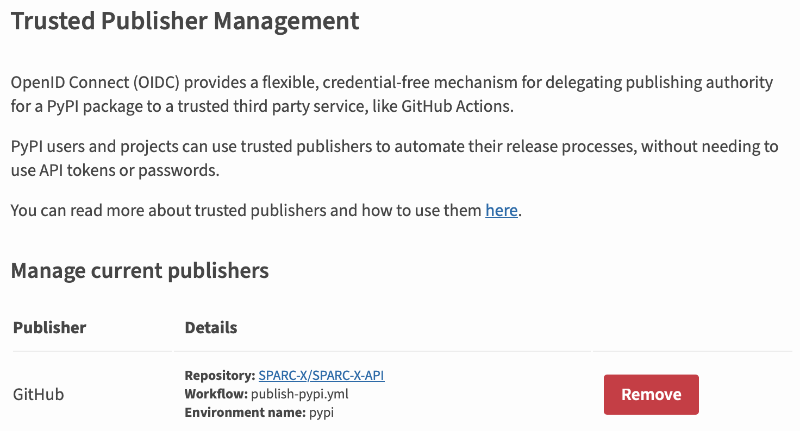

SPARC-X-API package releases
On conda-forge
SPARC-X-API is packaged as
sparc-x-api in the
conda-forge channel. The source code (feedstock) for the package is
managed at
sparc-x-api-feedstock.
Please note that this repository is under the conda-forge
organization. If you wish to become a maintainer, please ping
@alchem0x2a.
The feedstock is set to track new releases in SPARC-X-API, and usually no major maintenance is required. The bot system will create a PR for a version bump, see one example for the maintainers to modify and merge. Please also ensure:
Only the
recipe/meta.yamlneeds to be changed.Follow the conda-forge’s own recipe standard
Do not directly use the
.conda/meta.yamlfor conda-forge (it is designed for local packaging test)Bump the
build.numberif you need to change the recipe YAML on the same SPARC-X-API release.
Debug the recipe using local build
The build toolchain in conda-forge is slightly different from the
standard conda-build command. If the build workflow fails after
submitting the PR, you may run the recipe locally to debug. You need
both the docker engine and a conda distribution on your local
machine. Run the following command at the root of the local clone of sparc-x-api-feedstock:
python build-locally.py
Deploy on PyPI
SPARC-X-API is deployed on PyPI under the name
sparc-x-api. Please contact
the current maintainer @alchem0x2a if
you wish to become a co-contributor.
Publishing on PyPI does not require setting an API token in the CI workflow. Instead, it uses the OIDC protocol for a trusted publisher. The current settings on PyPI are like follows:
